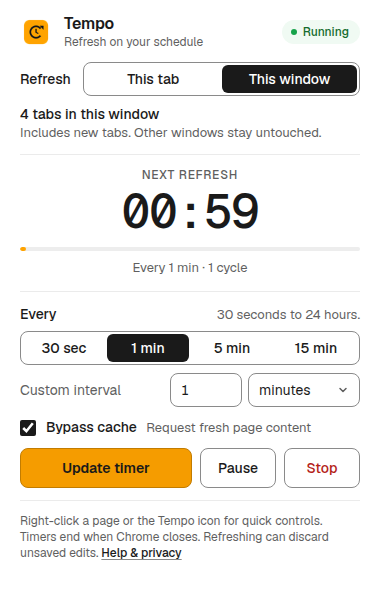
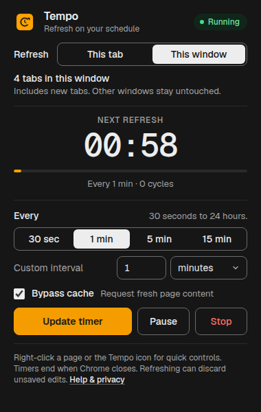

Tempo
Your tabs. Your tempo.
Refresh one tab or just one Chrome window on an interval. Right-click controls, pause/resume, cache bypass, and a clear countdown. Light and dark themes. Free, with no tracking.


Install it now
- Download and extract the extension ZIP into a folder you’ll keep.
- Open
chrome://extensionsin Chrome. - Enable Developer mode, click Load unpacked, and choose the extracted folder containing
manifest.json. - Pin Tempo, open a website, and start your timer.
Publish it from your developer profile
The publisher kit is prepared for a public, searchable listing and contains the upload ZIP, store screenshots, promotional image, icon, listing copy, permission explanations, and privacy policy page. Follow the prepared publishing guide and sign in to the Chrome Developer Dashboard.